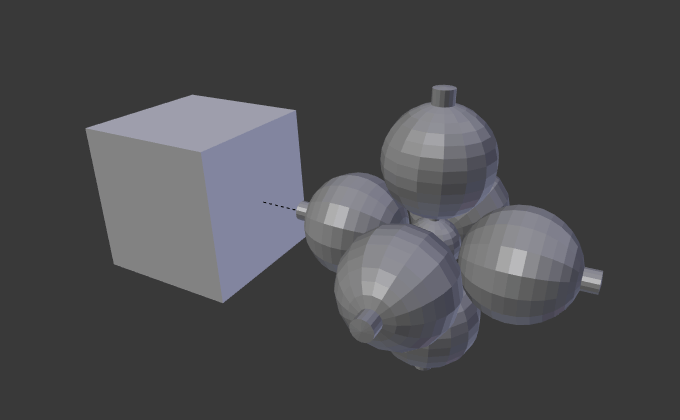
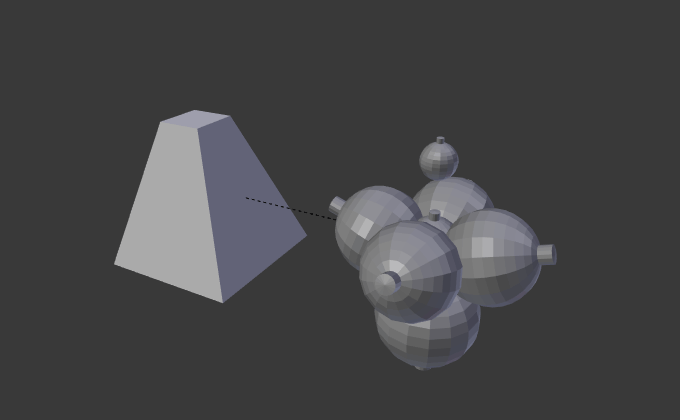

Дубль-Грані -- DupliFaces¶
Орієнтир
| Mode: | Object Mode |
|---|---|
| Panel: | |
| Menu: |
Дублювання по Граням -- Duplication Faces чи Дубль-Грані -- DupliFaces -- це здатність копіювання об'єкта на кожну грань предківського об'єкта. Один з найкращих способів пояснити це -- проілюструвати на прикладі.
- Масштаб -- Scale
Scales each instances according to the size of its corresponding face.
- Inherit Scale
- Scale the DupliFaces objects.
Make Dupli-Face tool converts linked objects (that share mesh data) into dupli-face instanced. This tool creates the parent object (duplicator) with faces where the objects were, then it uses Duplication Faces to put instances at the location of every created faces.
You can to go back from DupliFaces instancing to multiple linked objects using , Shift-Ctrl-A.
Xem thêm
Приклад blend-файлу
Завантажити blend-файл, що використовується для прикладів на цій сторінці, можна тут -- here.
Базове використання¶
У цьому прикладі ми будемо використовувати UV сферу з видавленим «північним полюсом» в якості нашого базового об'єкта та куб -- в якості нашого предківської сіті. Для приріднення сфери до куба у Режимі Об'єкта -- Object Mode спершу клацніть RMB на сфері, далі клацніть Shift-RMB на кубі для його виділення (порядок виділення є дуже важливим тут), та наостанок клацніть Ctrl-P для створення відношення приріднення.

Куб і сфера. |

Дублювання Граней, застосоване до куба. |
Наступне, у «Редактор Властивостей > вкладка «Об'єкт» > панель «Дублювання» -- увімкніть кнопку «Грані» -- Faces. Сфера здублюється по одній на кожну грань куба.
Ghi chú
Успадковані властивості
Локація, орієнтація та масштаб дубльованих нащадка(ків) відповідає таким же властивостям граней предка. Тому, якщо кілька об'єктів є приріднені до куба, то вони усі будуть продубльовані по одному на кожну грань куба. Якщо цей куб є підподіленим, то кожен нащадок буде буде продубльований для кожної грані куба.
Об'єкти предка та оригіналу показується як редаговані «шаблони» у 3D Огляді -- 3D View, але ніколи не рендеряться, зображуються.
Масштаб -- Scale¶

Опція «Масштаб» -- Scale увімкнена. |

Верхня грань куба зменшена у масштабі. |
{kind=link}
{kind=link}
При вмиканні опції «Масштаб» -- Scale для предківського об'єкта, масштаб нащадкових об'єктів буде адаптуватися до розміру кожної грань предківського об'єкта.
Таким чином, при зміні масштабування грані предківського об'єкта, розмір дубльованого об'єкта буде змінюватися відповідно.
Обмеження/міркування¶
Позиціонування дубльованої геометрії відносно грані залежить від позиції нащадкових об'єктів відносно початку дублікатора. Це може давати деякі візуальні артефакти у редакторів, оскільки геометрія оригінальних об'єктів може перекривати або перетинати дублікати. Одним зі способів вирішення є пересування початку дублікатора від площини сіті його граней.
Якщо геометрія нащадків не є симетричною, то орієнтація грані (як визначено порядком її вершин) може мати значення. До версії 2.70 Blender не мав інструментів, які дозволяють регулювати порядок вершин грані.
Однак, існує робхід, що дозволяє керувати цим. Зробіть одиничну квадратну грань та увімкніть «Дублювання/Грані» -- Duplication/Faces, щоб ви могли бачити дубльовану геометрію у вашому редакторі. Якщо орієнтація вас не влаштовує, то обертайте грань, допоки не буде так, як ви хочете. Типово, вам бажано здійснювати обертання у Режимі Правки -- Edit Mode, а не у Режимі Об'єкта -- Object Mode, але тут це не жорстка вимога.
Після того, як ви підлаштували орієнтацію, дублюйте цю грань та пересуньте дублікат у потрібне вам місце. Повторіть цей процес, допоки не матимете достатньо граней. Оскільки, зазвичай ці грані дотичні одна до одної, то ваша геометрія буде мати безліч дубльованих вершин. Скористайтеся кнопкою «Вилучити Дублі» -- Remove Doubles на панелі Інструменти -- Tools з Полиці Інструментів.
Демо-відео
Коротке відео, що ілюструє цей робхід: